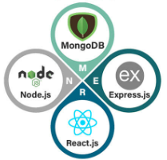
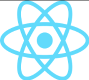
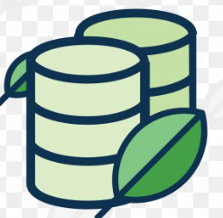
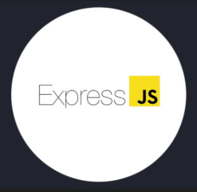
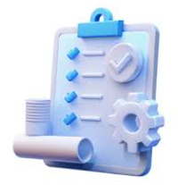

Godswill Omondi
My Professions

Full Stack Developer

React Frontend Engineer

Non Relational DB administrator

Express backend Engineer

Project Manager
I’m a passionate software engineer focused on building practical, user-centered digital solutions. With a strong foundation in JavaScript and a growing expertise in modern tools like React, I enjoy transforming ideas into responsive, scalable, and intuitive applications. My approach to development is rooted in clarity, performance, and thoughtful design—ensuring that every product I work on not only functions well but also delivers a seamless user experience.
Beyond just writing code, I’m deeply interested in understanding how systems work under the hood, from database design to API architecture. I continuously refine my skills by exploring new technologies and best practices, with a particular interest in full-stack development and emerging languages like Rust. I believe that great software is built through a balance of technical precision, creativity, and a commitment to continuous learning.
I thrive in environments where problem-solving, collaboration, and innovation are valued. Whether working on personal projects, academic challenges, or real-world applications, I aim to write clean, maintainable code and contribute meaningfully to every project I’m part of. As I grow in my journey, my goal is to build impactful solutions, contribute to meaningful products, and evolve into a well-rounded engineer who can bridge both frontend and backend systems effectively.